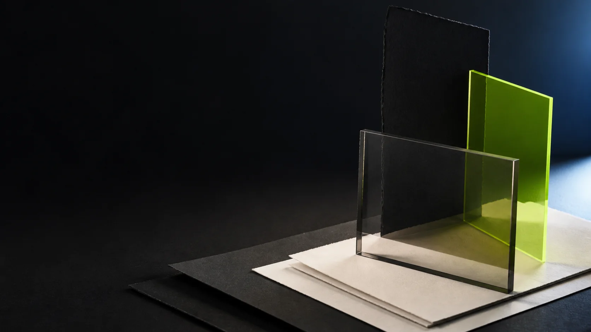
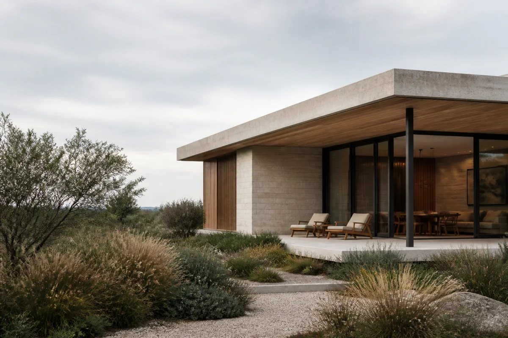
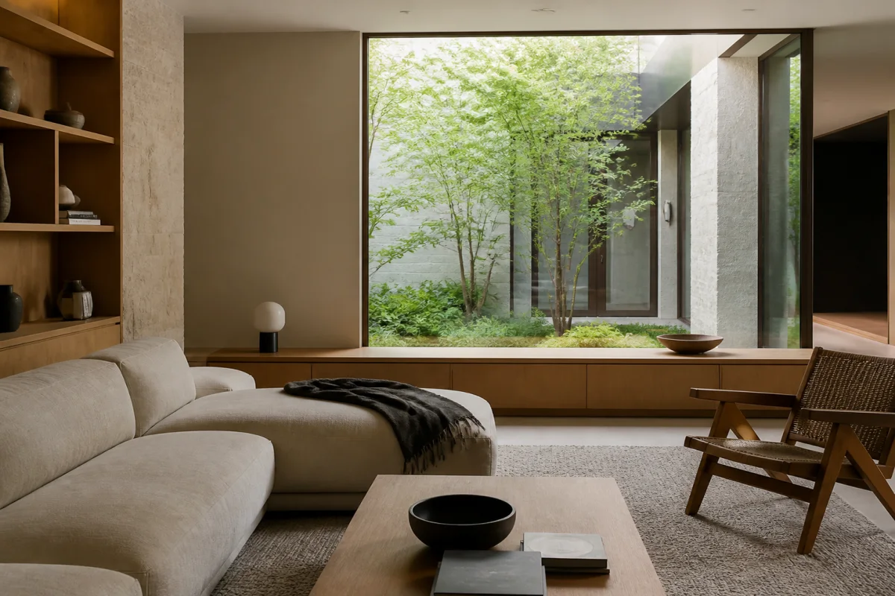
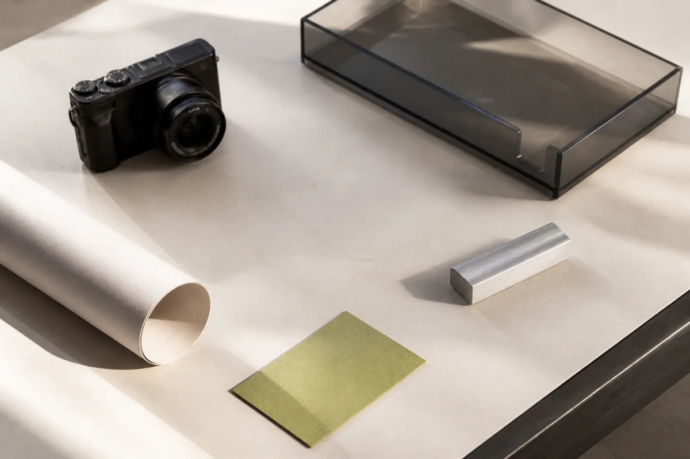
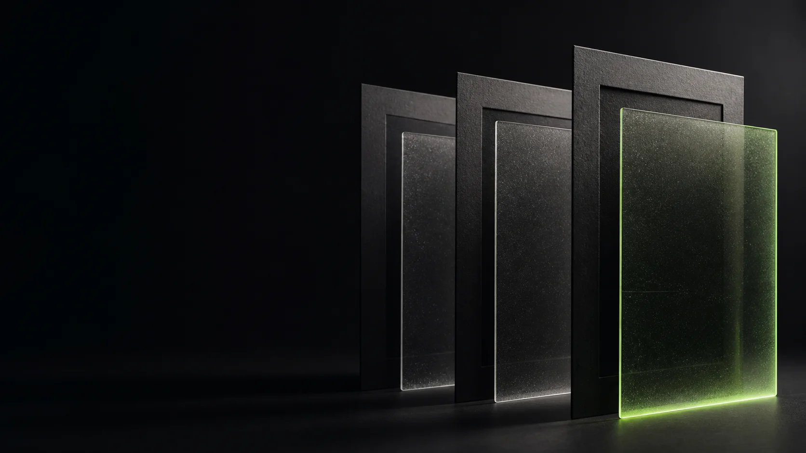
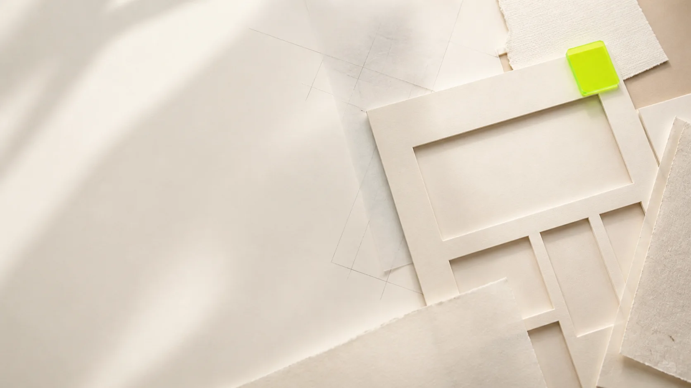

Visual composition
Compose the whole page.
Shape layout, navigation, type, colour, and reusable regions directly on the canvas.
Start with a complete page or an empty canvas, shape a polished website immediately, then convert it into a full native WordPress site.
Start fast. Edit visually. Publish deliberately.

Click any element on the canvas and shape its type, spacing, colour, and responsive behaviour in context.
Choose a complete page, drop in a ready-made section, or begin clean. Every route opens inside the same visual canvas, ready for your words, images, and brand.
Try building
Every part remains visible, connected, and ready to carry into WordPress.

Shape layout, navigation, type, colour, and reusable regions directly on the canvas.

Work with images, video, forms, galleries, tables, and collection-driven content in context.

Tune desktop, tablet, and mobile without splitting the page into disconnected versions.

Catch broken links, missing descriptions, heading issues, incomplete metadata, contrast problems, and unfinished content before release.
Convert Pagecraft into an independent WordPress-owned copy with its layout, styling, assets, and responsive behaviour intact.
Pagecraft converts pages, styles, assets, and responsive rules into a full native WordPress site. The imported site becomes its own WordPress-owned copy, editable locally without a Pagecraft Cloud dependency.
The imported page runs from WordPress data and local assets. Continue editing it with Pagecraft inside WordPress, independently of the cloud copy.
Your draft can keep changing. The release already serving visitors does not. Pagecraft packages the site, verifies it, and leaves the last healthy version online.
Live independentlyThe published site stays available on its last verified release.
Open the visual builder and shape the first screen directly in your browser.
No software installation required.